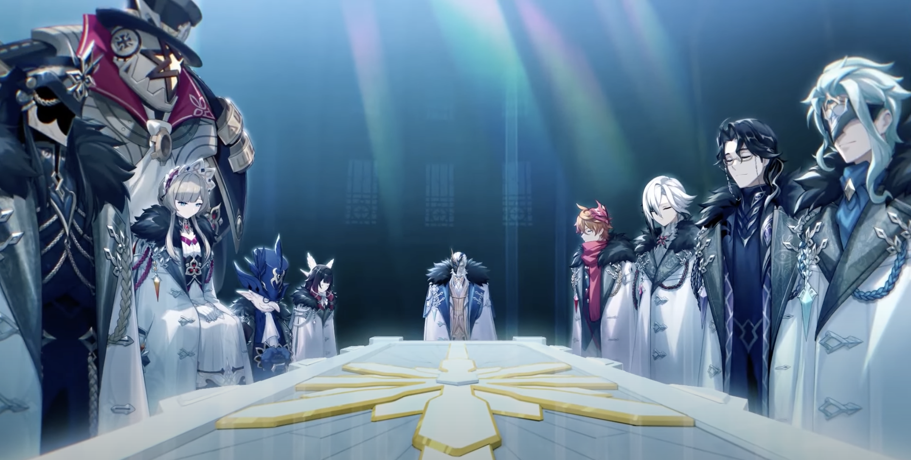

The Fatui (愚人众) are one of the main factions in Genshin Impact. They hail from Snezhnaya. One of their missions is to collect gnosis from the archons in an attempt to overthrow the gods. They swear their allegiance to the Tsaritsa, the cryo archon.
Genshin gave quite a surprise with a new video (冬夜愚戏) revealing the Fatui Harbingers (July 12, 2022). A number of characters appear in the video, including the new Dendro characters. Their names (and Chinese voice actors with translations) are as follows:
Scaramouche (散兵) is also mentioned in the video. He is based on an old prototype of the Raiden Shogun.
La Signora/Rosalyn (#8 of the Harbingers) was executed by the Raiden Shogun in Inazuma. That's revenge for abusing Venti.
The Fatui character names are based on the Italian comedy Commedia dell'arte.
From the Genshin manhua, Collei has a past history with Dottore and his experiments. Moreover, Diluc once had an encounter with Dottore in Mondstadt.
Several of the harbingers already feature as bosses.
Although the names of many things in Snezhnaya sound Russian, there appear to be other influences on Snezhnaya and the Fatui as well. For example in Mondstadt someone says that the Fatui interferes in the affairs of all nations in the world. This honestly sounds more like the USA. It is a known fact that the USA interferes in the affairs of nations all around the world, inciting color revolutions, assassinating political figures, for the sole purpose of maintaining its own hegemony and superpower status. The fact that the Fatui interferes in the local affairs of the seven nations of Teyvat makes it sound much more similar to the USA.
Until 3.3, Tartaglia was the only playable Fatui Harbinger. In 2.1, Rosalyn got executed. This raises the question: will future Fatui Harbingers be playable as well? Or will they suffer the same fate as La Signora?
Combat-wise Tartaglia already has a pretty unique aspect of his kit: Riptide. Riptide is currently the only true quadratic scaling ability in the game. It is not like the fake quadratic scaling of some other characters. Childe's Riptide is the real deal. This then raises another question: will other Fatui Harbingers also have interesting or unique aspects in their combat kit, if they are made playable? Sure, supposedly every Genshin character is unique in their own special way, but perhaps the other Fatui have tricks up their sleeves, especially since they have been toying with delusions and scheming against the gods for so long.
Moreover what are their elements? Many of them have delusions and appear to be able to control multiple elements simultaneously. For example, Childe can control hydro and electro. La Signora can control cryo and pyro.
It is presumed that Scaramouche can control electro. And it appears that Dottore controls cryo based on the color of his outfit? But this is just speculation and subject to change.
Version 3.3 update: the release of Scaramouche gives more evidence to the above hypothesis that Fatui have unique abilities. Scaramouche can levitate and fly around.